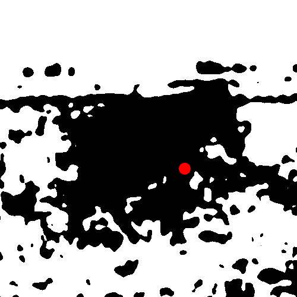

<!DOCTYPE html>
<html>
	<head>
		<title>Can you identify the object?</title>
		
        <script src="jspsych-6.1.0/jspsych.js"></script>
        <script src="jspsych-6.1.0/plugins/jspsych-fullscreen.js"></script>
        <script src="jspsych-6.1.0/plugins/jspsych-html-keyboard-response.js"></script>
        <script src="jspsych-6.1.0/plugins/jspsych-image-keyboard-response.js"></script>		
        <script src="jspsych-6.1.0/plugins/jspsych-call-function.js"></script>
		<script src="jspsych-6.1.0/plugins/jspsych-survey-multi-choice.js"></script>
		<script src="jspsych-6.1.0/plugins/jspsych-survey-html-form.js"></script>
		<script src="jspsych-6.1.0/plugins/jspsych-survey-multi-select.js"></script>
		<script src="jspsych-6.1.0/plugins/jspsych-survey-text.js"></script>
		<script src="jspsych-6.1.0/plugins/jspsych-html-button-response.js"></script>
		<script src="jspsych-6.1.0/plugins/jspsych-instructions.js"></script>
		<script src="jspsych-6.1.0/plugins/jspsych-virtual-chinrest.js"></script>
		<script src="plugins/jspsych-preload.js"></script>
		<script src="plugins/jspsych-survey-text-autocomplete.js"></script>
		<script src="design_matrices.json"></script>
		<script src="preload_images.json"></script>
		<script src="words.json"></script>
        <script src="bowser.js"></script>
		<script src="https://cdnjs.cloudflare.com/ajax/libs/svg.js/2.6.3/svg.min.js"></script>
		<link href = "jspsych-6.1.0/css/jspsych.css" rel="stylesheet" type="text/css"></link>
		<script src="jatos.js"></script>
		<link href = "autocomplete.css" rel="stylesheet" type="text/css"></link>

		<style>
			.InstrBx {max-width: 70vw; max-height: 100%;}
			.EncodingBox {width: 400px; height: 300px; position:absolute; top:50%; left:50%;
                margin-top:-150px; margin-left:-200px; font-size: 28px; text-align: center;}
            .leftIM {width: 150px; height: 150px; position:absolute; top:0%; left:0%;}
            .rightIM {width: 150px; height: 150px; position:absolute; top:0%; right: 0%;}
            .probeIM {width: 150px; height: 150px; position:absolute; top:50%; left: 50%; margin-top: -75px; margin-left: -75px;}
            .UpSignal {width: 20px; height: 40px; position:absolute; top:0%; right: 50%; margin-top: -40px; margin-right:-10px;}
		</style>

		
	</head>
	<body>
		<p id="WorkerID_info"></p>

	</html>
	<body>	

	<!-- Make sure the form has the autocomplete function switched off:
	<form autocomplete="off" action="/action_page.php">
		<div class="autocomplete" style="width:300px;">
		  <input id="myInput" type="text" name="mywords" placeholder="Please start typing">
		</div>
		<input type="submit">
	  </form> -->
	

	<script>
	// maximum amount of participants
	var max_number_pp = 35;

	var id = Math.floor(Math.random() * max_number_pp); // random id from 0 to max_number_pp
	var image_design = DM[id];
	var images_to_load = design_images
	var input_words = words
	var dot_resp = Math.floor(Math.random() * 2) // randomize recognition mapping

	
	
	console.log('ID: ' + id)

    /* TAG MOUSE ON/OFF */
	
	var no_mouse = {
		type: 'call-function',
		func: function(){ 
			document.querySelector('head').insertAdjacentHTML('beforeend', '<style id="cursor-toggle"> html { cursor: none; } </style>'); 
		}
	};
	
	var mouse = {
		type: 'call-function',
		func: function(){ 
			document.querySelector('head').insertAdjacentHTML('beforeend', '<style id="cursor-toggle"> html { cursor: default; } </style>');
		}
	};

	// UPDATE BLOCK ID AND BLOCK INFO
		
	var next_trial = {
		type: 'call-function',
		func: function(){ 
            trial++; 
		}
	};
	
	//////////////////////////
	///  GLOBAL VARIABLES  ///
	//////////////////////////
    
    var flag_ExitFullScreen = 0;
	/* GENERAL SETTINGS */

	var timeline = [];
	var keys = ['e', 'i']
	var trial = 0;

	var preload = {
    type: 'preload',
    images: images_to_load,
	message: "The experiment is loading. Please, be patient. This can take up to five minutes. ",
	error_message: "The experiment failed to load. Please, check your network and refresh the site.",
	max_load_time: 300000
	}
	timeline.push(preload)


	////////////////////
	///  SUBJECT ID  ///
	////////////////////

	/* RANDOM ID */	
	
	var subject_id = jsPsych.randomization.randomID(15);
	var currentLocation = window.location;
	var subject_url = currentLocation["href"]
	// var subject_Prolific = subject_url.split('PROLIFIC_PID=');  // Extract Prolific ID directly from study link (configure it in Prolific!!)
	// if(subject_Prolific.length>1){
	// 	subject_Prolific = subject_Prolific[1].substring(0,24)
	// }
	
	// detect visitor variables with the bowser js library (/js/bowser.js)
	// This will allow us to restrict the browser (e.g. Chrome)
	jsPsych.data.addProperties({ // add these variables to all rows of the datafile
		browser_name: bowser.name, browser_version: bowser.version,
		os_name: bowser.osname, os_version: bowser.osversion,
		tablet: String(bowser.tablet), mobile: String(bowser.mobile),      // convert explicitly to string so that "undefined" (no response) does not lead to empty cells in the datafile
		screen_resolution: screen.width + ' x ' + screen.height,
		window_resolution: window.innerWidth + ' x ' + window.innerHeight, // this will be updated throughout the experiment
	});

    ////////////////////////////////////
    /////  WECLOME / DEMOGRAPHICS  /////
    ////////////////////////////////////


	// WELCOME MESSAGE & INFORMED CONSENT //
	var consent = {
		type: 'instructions',
		pages: ['<div class = "InstrBx"><h1>Welcome to the experiment!</h1>'+
		'<p align="justify">This is a research project conducted at the University of Granada and is funded by the MICINN, project ref. PID2023-149428NB-I00. Your participation in our study will not have any effect or benefit on your health. Your participation in our study does not pose any risk. You may notice some eye strain associated with being attentive to the screen, which is normal when working with computers. It is important that you know that your participation is voluntary and at any time you can abandon the experiment without being penalized for it. You are free to stop the experiment by closing your browser window at any time, which will not be of any disadvantage to you.<br><br> We will collect the minimum information about you (ID, age, gender and manual dexterity), and this will be stored and guarded confidentially at all times following the guidelines of Organic Law 3/2018 of December 5 on Protection of Personal Data and Guarantees of Digital Rights. If you wish to exercise the rights over your data, contact by email (cgonzalez@ugr.es) the Principal Investigator of the project, Dr. Carlos González. Following the University of Granada’s Code of Good Research Practices, the non-personal data collected in this study may be shared completely anonymously in open repositories, accessible to other researchers. None of this data will allow the identity of the participants to be identified.<br><br> By clicking "I agree", you affirm that you agree to participate in this study, and you allow your data to be processed and shared completely anonymously. You affirm that you have made this decision freely based on the information received in and have had the opportunity to receive additional information. You understand that you can withdraw this consent at any time without receiving a penalty for doing so. If you do not wish to participate, please close this window.</p>'],
		show_clickable_nav: true,
		button_label_next: "I agree",
		allow_backward: false
	};
	timeline.push(consent)
	
    /* SUBJECT DATA */
	
	var ppn_info_1 = {
  		type: 'survey-html-form',
		html: '<p>What is your Prolific ID?</p><p><input name="prolificID" id="prolificID" /></p>'+ // add later minlength="24"
			  '<p>How old are you?</p><p><input name="age" type="number" id="age" required min="18"/></p>'+
			  '<p>What is your nationality?</p><p><input name="nationality" type="text" id="nationality" required/></p>' 
	}
	timeline.push(ppn_info_1)

	var ppn_info_2 = {
  		type: 'survey-multi-choice',
		questions: [
		{ prompt: "What is your gender?", 
			options: ["Female", "Male", "Other", "I prefer not to answer"], 
			required: true,
			horizontal: true,
			name: 'gender'
		}, 
		{ prompt: "Are you right or left-handed?", 
			options: ["Right-handed", "Left-handed"], 
			required: true,
			horizontal: true,
			name: 'handedness'
		}],
	}
	timeline.push(ppn_info_2)

	/* ADD TO ALL DATA */
	
	var add_ppn_info = {
		type: 'call-function',
		func: function(){
			jsPsych.data.addProperties({
				subject: subject_id,
				subject_url: subject_url,
				subject_ProlificID: JSON.parse(jsPsych.data.get().last(2).values()[0].responses)["prolificID"],
				designmatrix_ID : id,
				age: JSON.parse(jsPsych.data.get().last(2).values()[0].responses)["age"],
				nationality: JSON.parse(jsPsych.data.get().last(2).values()[0].responses)["nationality"],
				gender: JSON.parse(jsPsych.data.get().last(1).values()[0].responses)["gender"],
				handedness: JSON.parse(jsPsych.data.get().last(1).values()[0].responses)["handedness"]
			});
		}
	};
	timeline.push(add_ppn_info);
	
	/////////////////////
	///  FULL SCREEN  ///
	/////////////////////
		
	timeline.push({
		type: 'fullscreen',
		fullscreen_mode: true
	});
	    
	////////////////////
	///  HIDE MOUSE  ///
	////////////////////
		
	// timeline.push(no_mouse);
  
	
    //////////////////////
	///  INSTRUCTIONS  ///
	//////////////////////

	var instruc_size = {
		type: 'instructions',
		pages: [
		'Welcome to the experiment! Please, keep in mind this study requires using a QWERTY keyboard.<br>Before we begin, we will measure your screen size and estimate your viewing distance from the screen.<br>With this, we can ensure that the images in this experiment will be displayed at the same size for every participant.'
		]	
	,
		show_clickable_nav: true,
		button_label_next: "Next",
	}

	var image_scaling = {
		type: 'virtual-chinrest',
		blindspot_reps: 3,
		resize_units: "cm",
       pixels_per_unit: 50
	};
	timeline.push(instruc_size, image_scaling)

	if (dot_resp == 0) {
		var instr_resp = "<p>Press the <b style='color:#0000FF'>E</b> key if the dot is <b style='color:#0000FF'>ON</b> the main object. Press the <b style='color:#FF0000'>I</b> key if it is <b style='color:#FF0000'>OFF</b> it.</p>"
	} else {
		var instr_resp = "<p>Press the <b style='color:#0000FF'>I</b> key if the dot is <b style='color:#0000FF'>ON</b> the main object. Press the <b style='color:#FF0000'>E</b> key if it is <b style='color:#FF0000'>OFF</b> it.</p>"
	}

	var instruc = {
		type: 'instructions',
		pages: [
	
		'In this experiment, you will see images like this:' +
		'<br>' + 
		'</img>' +
		'<p>Most of the times, you will be asked whether a red dot is <b style="color:#0000FF">ON</b> or <b style="color:#FF0000">OFF</b> the main object shown in the image.<br><br>' +
		'Sometimes it will be hard to know if the dot is on or off and you’ll have to rely on your intuition.</p>',
		'In some other trials, we will again present the images without a red dot, and you will have to <strong>name</strong> the main object',
		'<h3>Here is an overview of the tasks you will have to do:</h3>' +
        '<div style="text-align: left">' +
          '<ol>' +
          '  <li>In some trials, while the image is on the screen, indicate whether a red dot is <strong>on</strong> or <strong>off</strong></li>' +
          '  <li>In some other trials, we will ask you to <strong>name</strong> the object.</li>' +
          '</ol>' +
        '</div>' +
        '<br>We will explain each task in detail on the next slides.',

        '<h3><b style="color:#8a25e7">Dot task:</b></h3>' +
        '<p>While the image is <strong>on the screen</strong>!<br>' +
			instr_resp +
        'Please, keep in mind that there is a time limit to answer in this trials, so we ask you to answer as fast and accurate as you can.<br>' +
        'Note as well that it is totally fine if you do not identify every object. This is normal! If unsure, just try to guess!</p>',
		
		'<h3><b style="color:#1ad30b">Object naming:</b></h3>' +
        '<p>Regardless of whether you identified the object, sometimes we will present the images for a very short time and ask you to name the object.<br>We know that this task will especially be difficult for some of the black-and-white images but please try and take a guess!<br><br>'+
        'To expedite this task, your guess will be auto-completed from a list of words in a <strong>drop-down menu</strong> once you start typing.<br> ' +
        'The drop-down menu contains a large number of options. If your specific guess is not included, you might want to <strong>try a synonym</strong>.<br>',
        

        '<h3>Summary:</h3>' +
        '<div style="text-align: left">' +
        '<ol>' +
        '  <li><b style="color:#8a25e7">Dot task:</b>' + instr_resp + '</li>' +
        '  <li><b style="color:#1ad30b">Object naming:</b> Name the object.</li>' +
        '</ol>' +
        '</div>',

		'In total, the experiment should take <strong>around 25 minutes</strong>.'+
		' There will be a few 1-minute long breaks during the experiment, so if you need to rest, <strong>please wait until one of those breaks.</strong>'+
		'<br><br>The experiment is going to start now. We will start with the <b style="color:#8a25e7">DOT TASK</b>. <br><br>Please, put your fingers in the E and I keys and press next to begin.'
		]	
	,
		show_clickable_nav: true,
		button_label_next: "Next",
	}
	
	
    
    // Instructions to go back to full screen mode
    var goBackToFullScreen = {
        type: 'fullscreen',
        message: '<div class = "InstrBx">To continue the experiment, you need to go back to full screen mode. Please, press the button below to switch to full screen mode.</div>',
        fullscreen_mode: true,
        on_finish: function(){
            flag_ExitFullScreen = 0;
        }

    }
    var goBackToFullScreen_IfNode = {
        timeline: [mouse, goBackToFullScreen],
		conditional_function: function(){
           	if(flag_ExitFullScreen == 1){
               	return true;
           	}else{
               	return false;}
			}
    }   
    //////////////////////////////////////////////////////////////////////////
	///////////////////////  EXPERIMENTAL TRIAL EVENTS  //////////////////////
    //////////////////////////////////////////////////////////////////////////
    
	/* (1) ITI */
	var ITI = {
		type: "html-keyboard-response",
		stimulus: '<div style="font-size:40px;">+</div>',
		choices: jsPsych.NO_KEYS,
		trial_duration: 1000, 
	}

	/* (1) IMAGE (with first question) */

	if (dot_resp == 0) {
		var Image_recog = {
			type: "html-keyboard-response",

			stimulus: function() {
				var trial = jsPsych.timelineVariable('data', true);
				var imagePath = 'stim/' + trial.filename + '.jpg';
			
				// Set up transforms
				var transform = "";
			
				if (trial.manipulation === "upside_down") {
				  transform += "scaleY(-1) ";
				}
			
				// Inversion via CSS filter
				var filter = trial.invert ? "filter: invert(100%);" : "";
			
				// Combine everything into the image tag
				var html = '<div class="InstrBx"><div class="img-container">';
				html += `</img>`;
				html += '</div></div>';
			
				return html;
			},
			choices: ['e','i'],
			prompt: "<p>Press <b style='color:#0000FF'>E</b> if the dot is <b style='color:#0000FF'>ON</b> the main object. Press <b style='color:#FF0000'>I</b> if it is <b style='color:#FF0000'>OFF</b> it.</p>",
			trial_duration: 5000,
			response_ends_trial: true,
			data: jsPsych.timelineVariable("data"),
			on_finish: function(data){		
				data.Exp_part = 'Exp';	
				data.trial_part = "dot_recog";
				data.RawResponse =  jsPsych.pluginAPI.convertKeyCodeToKeyCharacter(data.key_press);
				if (data.RawResponse == 'i') {
					data.dot_resp =  0;
				} else if (data.RawResponse == 'e') {
					data.dot_resp = 1
				} else {data.dot_resp = 0};
				if (data.dot_resp == 0 && data.dot_position == 'off') {
					data.dot_acc =  1} else if 
				(data.dot_resp == 0 && data.dot_position == 'on') {
					data.dot_acc =  0} else if 
				(data.dot_resp == 1 && data.dot_position == 'off') {
					data.dot_acc =  0} else if 
				(data.dot_resp == 1 && data.dot_position == 'on') {
					data.dot_acc =  1;
				} else {data.dot_acc =  0}
				}
					
		}
	} else {
		var Image_recog = {
			type: "html-keyboard-response",
			stimulus: function() {
				var trial = jsPsych.timelineVariable('data', true);
				var imagePath = 'stim/' + trial.filename + '.jpg';
			
				// Set up transforms
				var transform = "";
			
				if (trial.manipulation === "upside_down") {
				  transform += "scaleY(-1) ";
				}
			
				// Inversion via CSS filter
				var filter = trial.invert ? "filter: invert(100%);" : "";
			
				// Combine everything into the image tag
				var html = '<div class="InstrBx"><div class="img-container">';
				html += `</img>`;
				html += '</div></div>';
			
				return html;
			},
			choices: ['e','i'],
			prompt: "<p>Press <b style='color:#0000FF'>I</b> if the dot is <b style='color:#0000FF'>ON</b> the main object. Press <b style='color:#FF0000'>E</b> if it is <b style='color:#FF0000'>OFF</b> it.</p>",
			trial_duration: 5000,
			response_ends_trial: true,
			data: jsPsych.timelineVariable("data"),
			on_finish: function(data){		
				data.Exp_part = 'Exp';	
				data.trial_part = "dot_recog";
				data.RawResponse =  jsPsych.pluginAPI.convertKeyCodeToKeyCharacter(data.key_press);
				if (data.RawResponse == 'e') {
					data.dot_resp =  0;
				} else if (data.RawResponse == 'i')  {
					data.dot_resp = 1
				} else {data.dot_resp = 0}
				;
				if (data.dot_resp == 0 && data.dot_position == 'off') {
					data.dot_acc =  1} else if 
				(data.dot_resp == 0 && data.dot_position == 'on') {
					data.dot_acc =  0} else if 
				(data.dot_resp == 1 && data.dot_position == 'off') {
					data.dot_acc =  0} else if 
				(data.dot_resp == 1 && data.dot_position == 'on') {
					data.dot_acc =  1;
				} else {data.dot_acc =  0}
			}	
					
		
		}
	}
	
	var ifImagRecog = {
		timeline: [no_mouse, Image_recog],
		conditional_function: function(){
			var data = jsPsych.timelineVariable('data', true)
			if(data.block_type=='dot'){
			return true;
			
		  } else {
			return false;
		  }
		}
	  };

	
	var extra_ITI = {
		type: "html-keyboard-response",
		stimulus: '<div style="font-size:40px;">+</div>',
		choices: jsPsych.NO_KEYS,
		trial_duration: 500, 
	}
	
	var verbal_image = {
		type: "html-keyboard-response",
		stimulus: function() {
			var trial = jsPsych.timelineVariable('data', true);
			var imagePath = 'stim/' + trial.filename + '.jpg';
		
			// Set up transforms
			var transform = "";
			
			if (trial.phase === "color") {
				if (trial.manipulation === "horizontal_flip") {
				transform += "scaleX(-1) ";
				} else if (trial.manipulation === "upside_down") {
				transform += "scaleY(-1) ";
				}
			} else {
				if (trial.manipulation === "upside_down") {
				transform += "scaleY(-1) ";
				}
			}
		
			// Inversion via CSS filter
			var filter = trial.invert ? "filter: invert(100%);" : "";
		
			// Combine everything into the image tag
			var html = '<div class="InstrBx"><div class="img-container">';
			html += `</img>`;
			html += '</div></div>';
		
			return html;
		},
		choices: jsPsych.NO_KEYS,
		trial_duration: 100,
		response_ends_trial: false
	}
	
	var verbal_label = {
		type: 'survey-text-autocomplete',
		preamble: "Even if you are unsure, try to guess...",
		questions: [
		{prompt: 'What is the main object in the picture?',
		placeholder: 'Please, start typing',
		name: 'recognition',
		required: true,
		word_list: input_words}],
		trial_duration: 20000,
		button_label: 'Click here or in a word from to the list to submit',
		data: jsPsych.timelineVariable("data"),
			on_finish: function(data){		
				data.Exp_part = 'Exp';	
				data.trial_part = "Recognition";
				data.RawResponse =  jsPsych.pluginAPI.convertKeyCodeToKeyCharacter(data.key_press);
				data.verbal_id =  JSON.parse(jsPsych.data.get().last(1).values()[0].responses)["recognition"];
				
				}
		}

	var ifverbalLabel = {
		timeline: [no_mouse, extra_ITI, verbal_image, mouse,verbal_label],
		conditional_function: function(){
			var data = jsPsych.timelineVariable('data', true)
			if(data.block_type=='recognition'){
			return true;
			
			} else {
			return false;
			}
		}
		};
	

	


	
	
	/* take a break after X trials */
  	var trial_count = 0;

	var n_trials_total = 120;

	var trial_breaker = 30; // number of trials after which there is a break

	var break_trial = {
	type: 'html-keyboard-response',
	stimulus:  "<p style='font-size: 15px'>Time to take a break!</p>" + 
			"<p style='font-size: 15px'>Whenever you feel ready, continue by pressing the spacebar.</p>"+
			"<p style='font-size: 15px'>Please, keep in mind the task will automatically resume after 60 seconds.</p>",
	choices: ['space'],
	trial_duration: 60000
	};


	var break_conditional = {
		timeline: [break_trial],
		conditional_function: function() {
			var data = jsPsych.timelineVariable('data', true)
			var currentBlock = data.block;
			if (trial_count >1){
				var data_previous_trial = jsPsych.data.get().filter({Exp_part: 'Exp'}).last(1).values()[0]
				var previousBlock = data_previous_trial.block;
			} else {
				var previousBlock = 0
			}
			trial_count++;
			if (trial_count == n_trials_total){
			// if it's the last trial, then break
			return false;
			} else if (currentBlock == previousBlock){
			// if same block, then do not run the break trial
			return false;
			} else {
			// otherwise, run the trial_breaker
			return true;
			}
		}
		}
		
	var dot_starting = {
		type: 'html-keyboard-response',
		stimulus:  '<h3>Dot task starting...</h3>',
		trial_duration: 2000
		};
	
	var naming_starting = {
		type: 'html-keyboard-response',
		stimulus:  '<strong>Naming task starting...</strong><br>Pay attention! Images will appear for a short time now!',
		trial_duration: 2000
		};
	
	var dot_start_conditional = {
		timeline: [dot_starting],
		conditional_function: function() {
			var data = jsPsych.timelineVariable('data', true)
			if (trial_count >1){
				var data_previous_trial = jsPsych.data.get().filter({Exp_part: 'Exp'}).last(1).values()[0]
				var previousBlockType = data_previous_trial.block_type;
			} else {
				var previousBlockType = "dot"
			}
			var currentBlockType = data.block_type;
			if (currentBlockType == "dot" && currentBlockType != previousBlockType){
			// if it's the last trial, then break
			return true;
			} else {
			// otherwise, run the trial_breaker
			return false;
			}
		}
		}
	var naming_start_conditional = {
		timeline: [naming_starting],
		conditional_function: function() {
			var data = jsPsych.timelineVariable('data', true)
			if (trial_count >1){
				var data_previous_trial = jsPsych.data.get().filter({Exp_part: 'Exp'}).last(1).values()[0]
				var previousBlockType = data_previous_trial.block_type;

			} else {
				var previousBlockType = "dot"
			}
			var currentBlockType = data.block_type;
			if (currentBlockType == "recognition" && currentBlockType != previousBlockType){
			// if it's the last trial, then break
			return true;
			} else {
			// otherwise, run the trial_breaker
			return false;
			}
		}
		}
	////////////////////////
	/////  TRIAL PROC  /////
    ////////////////////////
    
	var exp_trial = [
		next_trial,
		break_conditional,
		naming_start_conditional,
		dot_start_conditional,
		ITI, 
		ifImagRecog,
		ifverbalLabel,
        goBackToFullScreen_IfNode,
    ]

	
        
	//////////////////////////////
	///  EXPERIMENTAL SESSION  ///
	//////////////////////////////
	
	/* INSTRUCTIONS */
	timeline.push(instruc);

	      
	/* RUN THE EXPERIMENT */	
    
	var run_experiment = {
		timeline: exp_trial, 
		timeline_variables: image_design,
		randomize_order: false
	};
		
		///////////////////////////////////////////
		/////////// Break & Store Data ////////////
		///////////////////////////////////////////
		

		var Break = {
		type: "html-keyboard-response",
		stimulus: function(){
		 		{var html = '<p>This is the end of the experiment. Thank you very much for participating!</p>';
				 	html += '<p>Please use this Completion Code: <br><b>77715FF5</b></br></p>';
		 			html += '<p>Press spacebar to finish. Feel free to close the window afterwards</p>';
		}
		return html},
		choices: ['space'],
		}		
		
		var storeData = {
				type: "call-function", 
				func: function() {    
					saveData(subject_id, 
						jsPsych.data.get().filter([{Exp_part: 'Exp', trial_part: 'dot_recog'}, {Exp_part: 'Exp', trial_part: 'Recognition'}]).csv());
				}}

	timeline.push(run_experiment)
   	timeline.push(Break)
	timeline.push(storeData)


	////////////////////
	///  SHOW MOUSE  ///
	////////////////////
		
	timeline.push(mouse);
	
	//////////////////////////
	///  CLOSE FULLSCREEN  ///
	//////////////////////////
	
	timeline.push({
		type: 'fullscreen',
		fullscreen_mode: false
	});
	
	////////////////////////
	///  RUN EXPERIMENT  ///
	////////////////////////
	
	
	
	
	
	jatos.onLoad(function() {
		jsPsych.init({
	timeline: timeline,
	show_preload_progress_bar: true,
	show_detailed_errors: true,
	
    on_interaction_data_update: function(data) {
        interaction = data.event;
        if (interaction.includes("fullscreenexit")){
            flag_ExitFullScreen = 1;
    		}},
	on_finish: function(data) {
			var results_full = (subject_id + "_Exp_full", jsPsych.data.get().csv());
			var results_events = (subject_id + "_Events", jsPsych.data.getInteractionData().csv());
			var results_full_filt = (subject_id, 
						jsPsych.data.get().filter([{Exp_part: 'Exp', trial_part: 'dot_recog'}, {Exp_part: 'Exp', trial_part: 'Recognition'}]).csv());

			// Submit results to JATOS
			jatos.submitResultData(results_full_filt, jatos.startNextComponent);
			jatos.endStudyAndRedirect("https://app.prolific.co/submissions/complete?cc=77715FF5");
		},
	on_close: function() {
			// saveData("Data_aborted_"+subject_id, jsPsych.data.get().csv());
			// saveData(subject_id, 
						// jsPsych.data.get().filter([{Exp_part: 'Exp', trial_part: 'Recognition'},{Exp_part: 'Exp', trial_part: 'Category'}]).csv());
			var results_aborted = ("Data_aborted_"+subject_id, jsPsych.data.get().csv());
			var results_aborted_filt = (subject_id, 
						jsPsych.data.get().filter([{Exp_part: 'Exp', trial_part: 'dot_recog'}, {Exp_part: 'Exp', trial_part: 'Recognition'}]).csv()
						);
			jatos.submitResultData(results_aborted, jatos.startNextComponent);
			jatos.submitResultData(results_aborted_filt, jatos.startNextComponent);

			},
	on_data_update: function() {
	var results_full_filt = (subject_id, 
						jsPsych.data.get().filter([{Exp_part: 'Exp', trial_part: 'dot_recog'}, {Exp_part: 'Exp', trial_part: 'Recognition'}]).csv());
	jatos.submitResultData(results_full_filt);

		}
		});
	});


	
	</script>
</html>